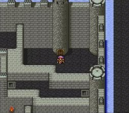
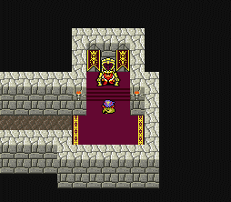
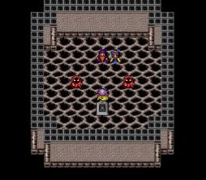
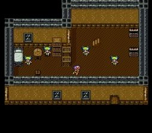
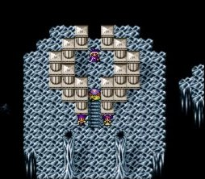
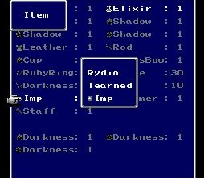

|
Trick
How to Get Summon (การได้สัตว์อสูร)
Rydia สามารถเรียนรู้สัตว์อสูรอื่นๆ ได้อีก นอกเหนือจากที่มีอยู่
Odin
สามารถเรียนรู้ได้ เมื่อได้ Rydia กลับมาตอนโตแล้ว
สถานที่เรียนรู้คือ ภายในปราสาทบารอน จะมีห้องลับอยู่ห้องหนึ่ง
ซึ่งอยู่ด้านล่างของหอคอยด้านขวา (ดังรูป)

แต่ปรกติจะไม่สามารถเข้าไปได้ เพราะจะมีสนามพลังกั้นไว้
จะเข้าไปได้เมื่อได้ Rydia กลับมาแล้วตอนโต เมื่อเข้าไปภายในจะเจอกับ Odin

(หากเข้ามาตอนที่ไม่มี Rydia จะเจอวิญญาณพระราชา)
จะต้องต่อสู้กับ Odin ให้ชนะเสียก่อน จึงจะสามารถ Summon เขามาช่วยต่อสู้ได้
Leviatan & Asura
สามารถเรียนรู้ได้ เมื่อได้ Rydia กลับมาตอนโตแล้ว
สถานที่เรียนรู้คือ ภายในหมู่บ้านสัตว์อสูรในโลกใต้ดิน
เมื่อเข้าไปภายในจะพบกับ Leviatan และ Asura
จะต้องต่อสู้กับเขาทั้งสองให้ชนะเสียก่อน จึงจะสามารถ Summon พวกเขาได้

* เทคนิคในการเอาชนะ Asura
ให้ใช้คาถา Reflect ยิงใส่ Asura จะทำให้ Asura ไม่สามารถเติม HP ได้
อีกทั้ง HP ที่เขาเติมยังสะท้อนกลับมาให้สมาชิกในกลุ่มของเราอีกด้วย
Sylph
สามารถเรียนรู้ได้ เมื่อได้ Rydia กลับมาตอนโตแล้ว
สถานที่เรียนรู้คือ ภายในถ้ำ Sylvan (ถ้ำที่ Yang เคยนอนป่วยในโลกใต้ภิภพ)
เมื่อเข้าไปภายหลังจะพบกับ Sylph
ซึ่งจะมีอยู่ตัวหนึ่งที่ให้พวกเราสามารถ Summon เขาได้

Bahamut
สามารถเรียนรู้ได้เมื่อสามารถไปยังดวงจันทร์ได้แล้ว
สถานที่เรียนรู้คือ ถ้ำบนดวงจันทร์ (ที่ไม่ใช่ทางเข้าปราสาทดวงจันทร์)
เมื่อเข้าไปภายในจะพบกัน Bahamut
ซึ่งต้องต่อสู้กับเขาให้ชนะเสียก่อน จึงจะสามารถ Summon เขาได้

Rare Summon
นอกจากนี้ยังมีสัตว์อสูรพิเศษอยู่อีก พวกนี้จะได้มาแบบสุ่มหลังจบการต่อสู้
จะได้มาจากศัตรูที่มีรูปร่างแบบเดียวกับพวกมัน ดังนี้
Imp
ได้มาจาก Imp, Dark Imp, Tricker
เจอได้บริเวณทั่วไปของปราสาท Baron, ในถ้ำสุดท้ายของดวงจันทร์
Bomb
ได้มาจาก Balloon, Grenade
เจอได้บริเวณ ถ้ำในช่วงแรกของเกม หลังจากที่ได้ Rydia (ในช่วงที่ Cecil ยังเป็น
DKnight)
Mage
ได้มาจาก Mage
เจอได้ในถ้ำของ Dark Elf (หรือถ้ำแม่เหล็ก ที่ไม่สามารถสวมใส่อุปกรณ์ที่เป็นเหล็กได้)
Cockatric
ได้มาจาก Eagle, Cockatric, Rudran Baby
เจอได้บริเวณบนภูเขาในช่วงที่ได้ Yang มา
How to Learn
เมื่อชนะศัตรูพวกนี้ ในบางครั้งจะได้ item มา

เมื่อกดใช้ ก็จะเรียนรู้เวทย์มนต์นั้นๆ ได้
|